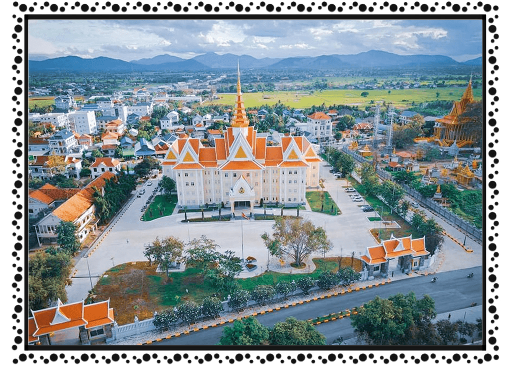

ខេត្ត និងក្រុងនៃព្រះរាជាណាចក្រកម្ពុជា
កំពង់ស្ពឺ
 កំពង់ស្ពឺ ជាអក្សរឡាតាំង Kampong Speu ជាខេត្តនៃកម្ពុជា។ ខេត្តមានព្រំប្រទល់ជាប់ខេត្តពោធិ៍សាត់ និង កំពង់ឆ្នាំងនៅខាងជើង ខេត្តកណ្ដាលនៅខាងកើត តាកែវនៅខាងភាគអាគ្នេយ៍ កំពតខាងត្បូង និងកោះកុងនៅភាគខាងលិច។ ទីរួមខេត្តគឺក្រុងច្បារមន។ ខេត្តកំពង់សឺ្ពសិ្ថតនៅក្នុងតំបន់ខ្ពង់រាប និង ព្រៃភ្នំមានប្រជាជនសរុប ៥៩៨ ៨៨២ នាក់ ក្នុងនោះមានប្រុស ២៨៧ ៣៩២ នាក់ ស្រី ៣១១ ៤៩០ នាក់។ ជាភាគរយនៃប្រជាជនជា ស្ត្រីមាន ៥២ ភាគរយ។ ខេត្តនេះរួមមាន ៧ ស្រុក, ក្រុង ២,៨៩ ឃុំ-សង្កាត់ និង ១៣១៩ ភូមិ។ ចំនួន ប្រជារា្រស្តទូទាំងខេត្តនេះ សើ្មនឹង ៥,២ ភាគរយនៃប្រជាជនទូទាំងប្រទេសកម្ពុជា។ សន្ទភាពប្រជាជនរបស់ខេត្តគឺ ៨៥ នាក់ក្នុងមួយគីឡូម៉ែត្រការ៉េ ខ្ពស់ជាង សន្ទភាពកម្រិតជាតិ ដែលមានតែ ៦៤ នាក់។សារមន្ទីរនរៈបូរី សារមន្ទីរនេះស្ថិតនៅតាមដងផ្លូវជាតិលេខ៤ ត្រង់ចំណុចភូមិចំបក់ ឃុំវល្លិ៍ស ស្រុកសំរោងទង។ សារមន្ទីរនេះត្រូវបានសាងសង់ឡើងជាលក្ខណៈគ្រួសារមួយក្នុងបំណងទុកជាសម្បត្តិផ្ទាល់ខ្លួនរបស់គេផង ហើយនិងជាការចូលរួមចំណែករក្សាទុកនូវបេតិកភណ្ឌសម្បត្តិវប្បធម៌ជាតិឲ្យគង់វង្សផងដែរ។ សារមន្ទីរនរៈបូរីមានវត្ថុបុរាណតាំងពីសម័យបុរេប្រវត្តិ រហូតមកដល់បច្ចុប្បន្ននេះហើយវត្ថុទាំងនោះភាគច្រើនជារូបបដិមា ធ្វើពីឈើ ពីថ្ម និង កុលាភាជន៍ដែលសរុបទាំងអស់មានរាប់ពាន់វត្ថុបុរាណ។ នៅក្នុងសារមន្ទីរនេះគេបានដាក់តាំងនូវវត្ថុជាច្រើនប្រភេទធ្វើ អំពីថ្មភក់ ថ្មភ្នំ ពីឈើ ដូចជា ព្រះពុទ្ធបដិមា រូបចម្លាក់ព្រះបាទជយវរ្ម័នទី៧ រូបឆ្មាំប្រាសាទ រូបនាងចេកនាងចម៘ ហើយនិង វត្ថុប្រើប្រាស់ពីជំនាន់បុរាណរួមមានឆ្នាំងស្ពាន់ កុលាភាជន៍ ឬ ចាន ឆ្នាំងធ្វើពីដីឥដ្ឋ ក្រឡ ពួច ជាដើម។ ក្រៅពីនេះទៀតមានក្បាច់ចម្លាក់ តុ ទូ កៅអី ដែលធ្វើពីឈើពីគល់ឈើធំៗមានអាយុកាល ជាច្រើនឆ្នាំ ធ្វើអំពីថ្ម និង អំពីសំបកខ្យង ឬ លៀសសមុទ្រ ជាដើម។ វត្ថុទាំងអស់នេះត្រូវបានគេតម្កល់ទុកដាក់ដោយ ឡែកពីគ្នា និង ដាក់នៅតាមថែវនីមួយៗនៃសារមន្ទីរនោះ។ វត្ថុទាំងប៉ុន្មាននេះ មុននឹងបានយកមកដាក់តាំងនៅក្នុងសារមន្ទីរនេះ ត្រូវបានម្ចាស់ប្រមែប្រមូលទិញពីអ្នកស្រុកនៅតាម ខេត្តផ្សេងៗតាំងពីក្រោយប្រទេសជាតិបានរំដោះពីរបបខ្មែរក្រហមឆ្នាំ ១៩៧៩ មកម៉្លេះ។